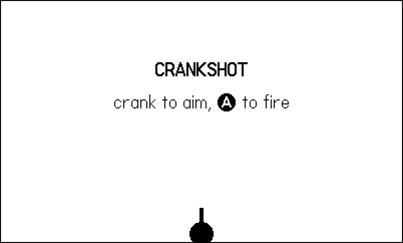
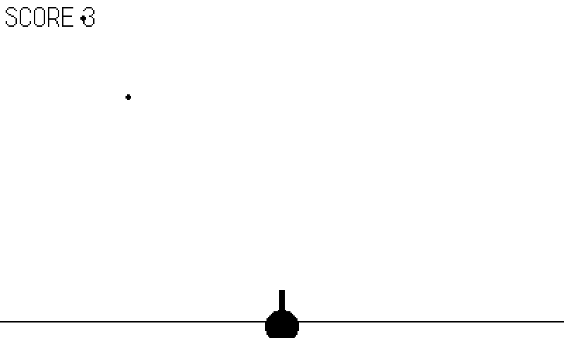
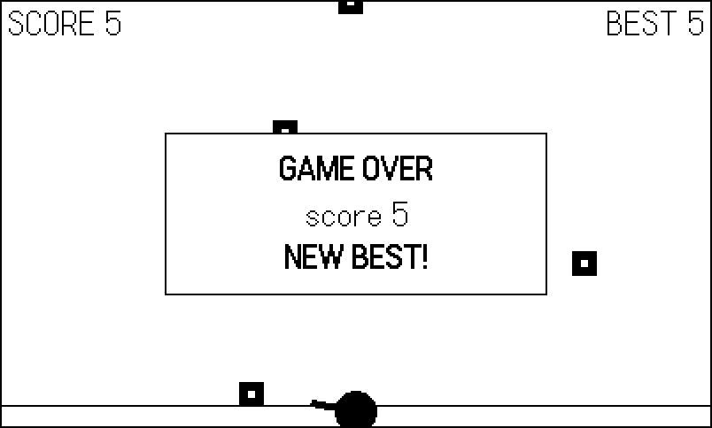

20 Polish and Release
A game is not finished when it plays well on your desk. It is finished when a stranger can find it in their launcher — with a card, an icon, and a loading screen — play it, quit, come back to their high score, and install your next update without your help. The distance between “works in the Simulator” and that sentence is this chapter: the pdxinfo metadata in full, the launcher art the system expects, a packaging trap that has silently eaten more release builds than any bug in this book, and the release channels themselves.
The example is Crankshot, and it is different in kind from every example before it: not a demonstration but a complete, small, finished game. Crank-aimed turret, descending targets, three modes, synth sound, a saved high score, a difficulty ramp — and a full launcher asset set in its source tree. It is around three hundred lines, and every pattern in it is one you already own: the Chapter 3 skeleton, the Chapter 10 1:1 aim, Chapter 12 voices, the Chapter 17 datastore, the Chapter 18 bot that captured this chapter’s figures. This is the book’s stack, assembled.
20.1 Crankshot
The game in one breath: targets fall from the sky; your turret sits at the bottom center; the crank is the barrel, one-to-one; A fires; every target destroyed scores a point and makes the sky meaner; one target touching the ground ends the run. Figure 20.1, Figure 20.2, and Figure 20.3 are the whole arc, played by the figure bot.

The mode machine, state table, and input snapshot are the Chapter 3 skeleton so exactly that they need no re-explanation — that was the point of building the skeleton once. Three pieces deserve a look. The aim mapping folds the crank’s absolute position into a clamped arc, so the barrel is the crank but can never point at the floor:
-- 1:1 aim: crank angle -> barrel angle, clamped to the sky.
-- getCrankPosition() reads 0 at straight up, so pos 0 aims the
-- barrel straight up and cranking right leans it right.
function Game.aim(pos)
local a = ((pos + 180) % 360) - 180 -- -180..180, 0 = up
if a > C.ARC then a = C.ARC end
if a < -C.ARC then a = -C.ARC end
G.aim = a - 90 -- degrees; -90 = up
endThe difficulty ramp is two functions of the score — fall speed climbs, the spawn gap shrinks toward a floor. Every knob lives in config.lua where playtesting can reach it:
-- The whole difficulty curve: two numbers that move with score.
local function fallSpeed()
return C.FALL + C.FALL_RAMP * G.score
end
local function spawnGap()
return math.max(C.SPAWN_MIN,
C.SPAWN_T - C.SPAWN_RAMP * G.score)
endAnd the ending does the two things every finished game’s ending must do: freeze the field the player died on, and settle up with the record immediately:
-- Game over is where the datastore earns its keep: persist the
-- record the moment it is set, not "sometime later".
function Game.over()
if G.score > G.best then
G.best = G.score
G.newBest = true
Save.store()
Sfx.best()
else
Sfx.lose()
end
G.setMode("gameover")
Harness.count("gameovers")
end-- The whole persistence layer (Chapter 17): one record.
Save = {}
function Save.load()
local d = playdate.datastore.read("save") or {}
G.best = d.best or 0
end
function Save.store()
playdate.datastore.write({ best = G.best }, "save")
Harness.count("saves")
end

Worth noting: the figure bot for this chapter aims a crank. The input snapshot carries the crank position as a plain number, so the bot supplies its own — it computes the angle to the lowest target and hands it over, no hardware involved:
-- One snapshot per frame. `pos` is the absolute crank position
-- in degrees; the bot supplies its own, which is all it takes
-- to automate a crank game.
Input = {}
local pd <const> = playdate
function Input.gather(frame)
local bot = Harness.input(frame)
if bot then return bot end
return {
pos = pd.getCrankPosition(),
fire = pd.buttonIsPressed(pd.kButtonA),
confirm = pd.buttonJustPressed(pd.kButtonA),
}
endAt frame 260 the script stops firing and lets a target land, because the game-over screen has to earn its figure too — the verify-both-endings rule from Chapter 18, applied to a book.
20.2 pdxinfo: the full reference
You have carried a minimal pdxinfo since Chapter 1. Here is Crankshot’s — one line away from minimal, and that line is this chapter’s hinge:
name=Crankshot
author=Simon Frost
description=Aim with the crank, hold the line. The book's finished game.
bundleID=com.sdwfrost.book.20ship
version=1.0
buildNumber=1
imagePath=launcherThe complete field list, per the SDK’s game metadata reference (Inside Playdate, §4.6). Everything in it is readable at runtime via playdate.metadata:
name,author,description- What players see — in the launcher, and on your game’s page when it is distributed. Write them like store copy, because they are.
bundleID-
Reverse-DNS unique identifier:
com.yourname.gamename. Fixed at first release, forever — it names the save-data directory (Chapter 1), so changing it orphans every player’s progress. version-
A display string for humans. The system attaches no meaning to it;
1.0,1.0.1,2.0-halloweenare all fine. buildNumber- A monotonically increasing integer, and the field that does the work. For sideloaded games it is required: a device decides whether a newer upload exists by comparing buildNumbers, full stop. Ship an update with the same number and every player’s device will politely conclude there is nothing new. Bump it for every public build — wire it to your release script or CI so forgetting is impossible.
imagePath-
The directory (relative to
source/) holding your launcher art — the subject of the next section. Without it your game shows the system default card, which reads as “unfinished” from across the room. launchSoundPath- Optional; a short audio file played during the launch animation.
contentWarning,contentWarning2- Optional; shown on first launch with a back-out option. The second screen only appears if the first is set. Keep them short — long strings truncate with an ellipsis.
20.3 Launcher assets: the face of the game
The Playdate launcher displays games as animated cards, and the system composes that presentation from a directory of images named by convention — the directory imagePath points at. Crankshot uses imagePath=launcher and ships four files, which is the practical minimum for a finished game (the SDK’s own floor is card + icon + launchImage):
card.png— 350x155. The game’s face in the launcher, and also what your game’s page onplay.dateshows for sideloads. This image is your game to a browsing player.card-pressed.png— 350x155. Shown while A is held on your card. An inverted copy of the card is the house style — cheap and reads as tactile feedback.icon.png— 32x32. The list-view icon. At this size, a monogram or one bold silhouette; detail becomes noise.launchImage.png— 400x240, opaque. Displayed while your game loads. No transparency — the SDK requires a full frame. A title-screen lookalike makes the load feel instant.
Beyond the minimum, the same directory can hold card-highlighted/ and icon-highlighted/ folders of numbered frames (with an optional animation.txt declaring loopCount, frames, and introFrames) that animate while your game is selected; launchImages/ for a 20 fps launch transition; launchImage-list.png for list view; and wrapping-pattern.png, a 400x240 tile used as the wrapping paper on newly downloaded, not-yet-unwrapped games. All are worth doing for a Catalog release; none gate a sideload.
Figure 20.4 is Crankshot’s card at 2x — three targets, the shot about to land, and the name in a title band.
card.png (shown at 2x). 350x155, 1-bit, drawn by an ImageMagick script — the launcher’s card view and the play.date sideload page both show exactly this image.
20.3.1 Cards from screenshots
You do not need to be an artist to have a credible card, because you already have gameplay screenshots — Chapter 18 generates them on every smoke run. The launcher draws the card into the rect (25, 43, 350, 155) of the 400x240 screen, so a 350x155 crop of a screenshot at offset +25+43 is pixel-perfect 1-bit with no resampling — the exact geometry, straight from the system. The shipped games’ release tooling automates this; the heart of it:
# launcher_assets.sh (the card, from a smoke-run screenshot)
magick "$SHOT" -filter point -resize 400x240! \
-crop 350x155+25+43 +repage \
\( -background black -fill white -font Helvetica-Bold \
-size 330x24 -gravity center label:"$NAME" \
-background black -extent 350x34 \) \
-gravity south -composite \
-threshold 50% -alpha off \
-stroke white -strokewidth 1 -fill none \
-draw "rectangle 0,0 349,154" -draw "line 0,120 349,120" \
"$L/card.png"
magick "$L/card.png" -negate "$L/card-pressed.png"Crop, composite a black title band with the game’s name, force to 1-bit, and invert for the pressed variant. That script produced the cards for nineteen released games in an afternoon. Crankshot’s art is a hand-tuned cousin of the same approach — committed as PNGs in source/launcher/ so the project builds anywhere. Two rules regardless of tooling: threshold to pure 1-bit (-threshold 50% -alpha off) so the launcher never dithers your art for you, and keep the name legible at arm’s length — the card competes in a grid of other cards.
20.4 The staging trap
Now the trap. Real projects do not run pdc on their working source; a Makefile stages files into a build directory first — injecting the smoke flag (Chapter 18), stripping READMEs, merging a shared core. And the single most dangerous line a Playdate Makefile can contain is this one:
cp source/* build/staging/source/ # the trapAn unadorned cp silently skips directories. launcher/ never arrives in staging. And here is why it eats release builds: nothing fails. pdc does not require launcher art, so it builds a perfectly valid pdx with no card; the Simulator runs it; every test passes; you ship it — and players get the default gray card and a load screen of nothing. The plaidate release sweep hit exactly this: the games looked done for weeks while every staged build was quietly cardless.
The fix is one flag, and this book’s own example.mk carries the warning label:
# example.mk
# Staging always uses `cp -r`: a bare `cp source/*` silently skips
# subdirectories and pdc will happily build the incomplete bundle.
cp -r source/* $(STAGE)/book/source/And because the failure is silent, the verification must be explicit. pdc compiles every PNG to a .pdi, launcher art included, so look inside the built bundle:
$ ls build/20-ship/book/CrankshotBook.pdx/launcher/
card-pressed.pdi card.pdi icon.pdi launchImage.pdiFour .pdi files, or your card did not ship. Put that ls in your release script next to the buildNumber bump — the two silent failures of Playdate shipping, both made loud.
Before any public build: buildNumber bumped (or the update will not install); ls the pdx for launcher/*.pdi (or the card did not stage); run the release — not smoke — build once, because release is the configuration you never otherwise play; and delete your local save data and boot it cold, because your dev machine has a save file and your players do not (Chapter 17’s first-launch path gets exactly one chance to matter).
20.5 The repository face
The launcher card is the game’s face on the device; the README is its face everywhere else. The convention across the shipped games is minimal and has survived nineteen releases: a README.md with the one-line pitch, the controls (crank first — it is why people bought the console), the rules in a paragraph, and a screenshot.png taken from a smoke run — the same screenshots your harness already makes, one more reason the pipeline pays rent. Keep both out of the pdx: they are repository files, not game assets, so the staging Makefile strips them (or simply never copies them — another point for explicit staging over cp of everything).
20.6 Releasing it
Three channels, in increasing order of ceremony:
Sideload. Zip the release pdx, upload it at play.date/account/sideload, and it appears in the owner’s launcher via Wi-Fi like any purchased game — your card.png fronting it on the sideload page. This is how you ship to yourself, playtesters, and friends, and it is where buildNumber discipline bites first: the device checks it to offer updates.
itch.io. The de facto storefront for independent Playdate games. Upload the zipped pdx, mark it as Playdate, reuse your card art at itch’s cover size, and put your smoke-run screenshots on the page. Players sideload what they download, so everything above still applies.
Catalog. Panic’s curated store, with real revenue and real review. A Catalog submission is a pitch: the full launcher asset set including the animated cards, polished metadata, and a game that survives a stranger playing it cold. Everything in this chapter is the entry fee.
Whatever the channel, version with discipline: version is marketing, buildNumber is law. A release script that bumps the number, rebuilds clean, verifies the launcher .pdis, zips, and tags the commit turns shipping from a ritual into a command.
20.7 What you know now
pdxinfoin full:name/author/descriptionare store copy;bundleIDis permanent identity (and the save directory);versionis for humans;buildNumbermust increase or sideload updates never install;imagePathnames the launcher art directory;launchSoundPathand the twocontentWarningfields are optional.- Launcher assets:
card.png350x155 (also the play.date sideload face),card-pressed.png,icon.png32x32,launchImage.png400x240 opaque — plus optional highlighted/launch animations and wrapping paper. The launcher draws cards at rect (25, 43, 350, 155), so a +25+43 crop of a 400x240 screenshot is a pixel-perfect card base. - The staging trap: bare
cpskipslauncher/andpdcbuilds green without it. Alwayscp -r; always verify withlsthat the pdx containslauncher/*.pdi. - A repository face: README with pitch, controls, rules, and a smoke-run
screenshot.png— stripped from the pdx. - Channels: sideload (play.date, buildNumber-gated updates), itch.io (zipped pdx, same rules), Catalog (the full asset set and a game that survives strangers).
- Crankshot: ~300 lines, every one of them a pattern from this book — the skeleton, the crank, the synths, the save, the bot, the card. A complete game is not big; it is finished.
20.8 Go make something
That is the whole path: from a bouncing “Hello, Playdate!” to a game with a card in the launcher — drawing in one bit, reading a crank, making noise, saving progress, testing itself while you sleep, holding 30 frames on real hardware, and shipping with its buildNumber bumped. None of the sixty-odd games behind this book started as more than one strange idea and an empty main.lua; the machine on your desk is small, sharp, joyful, and completely knowable, and you now know it.
What follows is not more path. Part VII reads six of the fleet’s shipped engines end to end — vectors, the grid, volume, shade, story state over a world, and a frame of reference — and every one of them is nothing but the habits of the last twenty chapters, compounded until a package of sixteen games weighs a thousand lines. Read them when you want to see how far this scales. Or don’t, and start now. Pick the idea that has been circling while you read. Make the folder. Write the update loop.
Crank on.